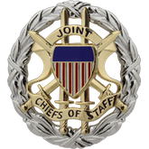
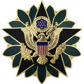
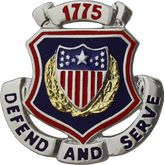
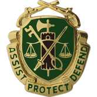
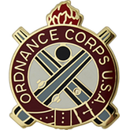
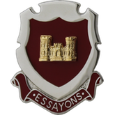
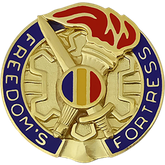
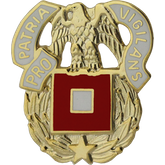
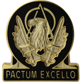
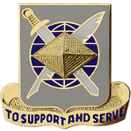

O Estado-Maior do USASOC
Um Estado-Maior é um órgão, composto por militares, de informação, estudo, concepção e planejamento para apoio à decisão de um comandante militar. O objectivo principal de um estado-maior militar é providenciar um fluxo de informação, bilateral e bidirecional, entre o comandante de uma unidade e as suas subunidades. Aqui dentro do nosso comando, o Estado-Maior é o responsável por gerir, administrar, planejar e executar todas as ações externas ao ambiente de simulação prática, e pode ser compostos por todos os membros da unidade a partir de Pv2, salvo algumas exceções.
Chefia do Estado-Maior
A Chefia Conjunta do Estado-Maior é a responsável por fiscalizar, administrar e aprovar as ações e projetos das sessões que estão sob sua jurisdição. Cabe à Chefia do Estado-Maior definir metas e tarefas para as sessões subordinadas, visando sempre o melhor para o USASOC.
O Comandante e o Sub Comandante do USASOC, bem como o Chefe do Estado-Maior, compõe a Chefia Conjunta do Estado-Maior.
Membros dessa unidade administrativa são reconhecidos pela insignia acima em seu uniforme (avatar do teamspeak), no bolso esquerdo do uniforme.
Estado-Maior
São todos os membros que compõe alguma sessão do Estado-Maior, sendo responsáveis por executar as mais diversas funções administrativas da unidade.
Membros dessa unidade administrativa são reconhecidos pela insignia acima em seu uniforme (avatar do teamspeak), no bolso esquerdo do uniforme.
S1 - Sessão de Pessoal
A Sessão de Pessoal pode ser composta por qualquer membro efetivo do USASOC, e é a responsável por manter os registros de cada um dos militares atualizados. As atualizações de operações, instruções, promoções, premiações e púnições, devem ser atualizadas todos os meses até o dia 05. Promoções e premiações só são consideradas como válidas quando a Sessão de Pessoal fizer a atualização dos dados do membro no site.
Membros dessa unidade administrativa são reconhecidos pela insignia acima em seu uniforme (avatar do teamspeak), no bolso direito do uniforme.
S2 - Sessão de Corregedoria
A Sessão de Corregedoria foi constituída para verificar se as regras e estatuto da unidade estão sendo cumpridas por todos os seus membros, e isso inclui os comandantes. Dentro de nosso comando, a corregedoria também é a responsável por premiar os membros do USASOC com medalhas, barretes e citações.
Qualquer punição dada como julgada pelo corregedor entra em vigor no momento da decisão, não precisando constar na ficha do operador para se tornar oficial.
Membros dessa unidade administrativa são reconhecidos pela insignia acima em seu uniforme (avatar do teamspeak), no bolso direito do uniforme.
S3 - Sessão de Engenharia
A Sessão de Engenharia é a responsável por construir mapas, missões, corrigir bugs e demais tarefas ligadas ao editor. Também são os responsáveis por formar/instruir novos "zeus" para nossas operações.
Apesar de serem os responsáveis por editar as nossas missões, a Sessão de Engenharia não é a unica que pode construir missões e campanhas para nossa unidade. Qualquer membro do USASOC pode construir campanhas e missões, porém fica a Sessão de Engenharia responsável por testar e aprovar e ajustar a edição que o membro fez para nossa realidade.
Membros dessa unidade administrativa são reconhecidos pela insignia acima em seu uniforme (avatar do teamspeak), no bolso direito do uniforme.
S4 - Sessão de Manutenção
A Sessão de Manutenção é composta por membros que assumiram o papel de executar pequenos reparos, atualizações, correções de bug e tudo mais que estiver ligado ao servidor e a parte tecnica da unidade.
Membros dessa unidade administrativa são reconhecidos pela insignia acima em seu uniforme (avatar do teamspeak), no bolso direito do uniforme.
S5 - Sessão de Tradição e Doutrina
A Sessão de Tradições e Doutrinas (TRADOC) é a responsável por determinar os procedimentos operacionais, padrões de equipamentos, mods e tudo mais que estiver ligado a padronização e simulação. Todo manual de instruções, manual de campo, manual de equipamentos e demais procedimentos ligados a simulação, devem ser aprovados pelo TRADOC antes de vigorar no USASOC.
Membros dessa unidade administrativa são reconhecidos pela insignia acima em seu uniforme (avatar do teamspeak), no bolso direito do uniforme.
S6 - Sessão de Recrutamento e Retenção
A Sessão de Recrutamento e Retenção é a responsável por criar campanhas, procedimentos e estabelecer relações para fazer com que novos recrutas ingressem na unidade, mas além disso que se mantenham na unidade. Sendo o primeiro contato que os recrutas terão dentro do USASOC.
Membros dessa unidade administrativa são reconhecidos pela insignia acima em seu uniforme (avatar do teamspeak), no bolso direito do uniforme.
S7 - Sessão de Instrução
A Sessão de Instrução é a responsavel por padronizar todas as instruções e treinamentos do USASOC, e é a responsável por manter o mais elevado nível operacional dentro das unidades.
Membros dessa unidade administrativa são reconhecidos pela insignia acima em seu uniforme (avatar do teamspeak), no bolso direito do uniforme.
S8 - Sessão Financeira
A Sessão Financeira é responsável por fazer o recebimento e contabilização do dinheiro da unidade, bem como o pagamento das despesas. Todo pagamento/recebimento da unidade é prestado contas ao Estado-Maior e posteriormente à todo o corpo de membros do USASOC, visando a maior transparencia com todos os membros.
Membros dessa unidade administrativa são reconhecidos pela insignia acima em seu uniforme (avatar do teamspeak), no bolso direito do uniforme.